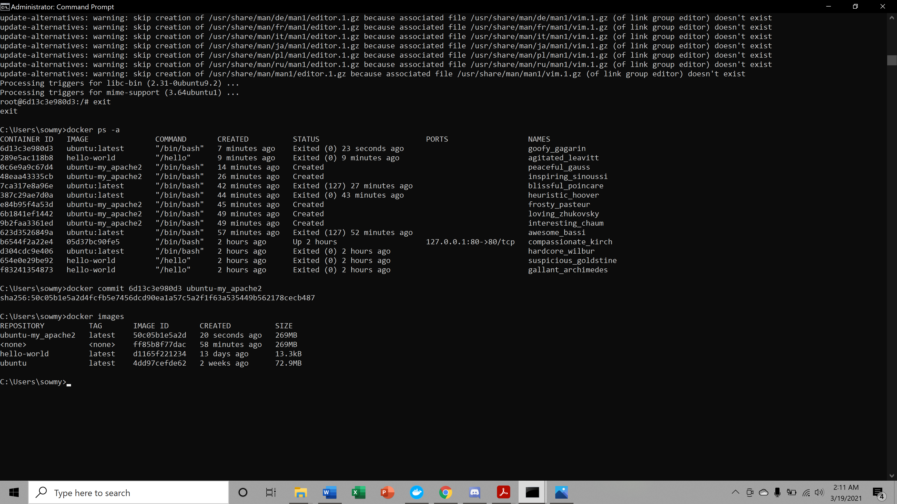

In the present world, Docker is an important term,
- Often used in CI/CD platform that packages and runs the application with its dependencies inside
a container
- Is a standard for Linux Containers
- A Container is a runtime that runs under any Linux kernel and provides a private machine-like
space under Linux
Docker terminology
- Image: Representation of Docker container i.e. a JAR or WAR file in Java
- Container: Runtime of Docker i.e. a deployed and running Docker image. For example, an
executable Spring Boot jar
- Engine: The code that manages, creates and runs the Docker containers
- Hub: A public developers registry to distribute their code
- Repository: A collection of Docker related images i.e. different versions of the same
application
How to setup a web server on your local computer using
docker
Step1 : Install Docker Engine
Step2: Install apache2 using “ apt-get install apache2 ”.
Step3: Install vim text editor using “ apt-get install vim ”.
Step4: Commit container to create a new Docker image.

Step5: Share Data Between a Docker Container and Host.
Using command “docker run -it -p 127.0.0.1:80:80 -v
C:\Docker_tutorial\local_dir:/var/www/html ubuntu-my_apache2 /bin/bash”.
Step6: Edit html and host the website.
Html Page